Transcription du document de formation. Les paragraphes, listes, tableaux et visuels isolés suivent l’ordre du document ; les aides pédagogiques sont séparées.
TP du Module 04 – La gestion du stockage
Dans VMware WorkStation, faites un clic droit sur votre VM Win10-XX
Pour rajouter un disque, cliquez sur Add… en bas de la fenêtre
Hard Disk > Next
SCSI (Recommanded) > Next
Create a new virtuel disk > Next
Maximum disk size (GB): 60
Store virtual disk as a single file > Next
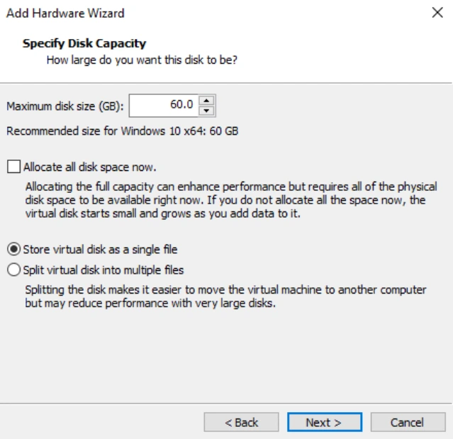
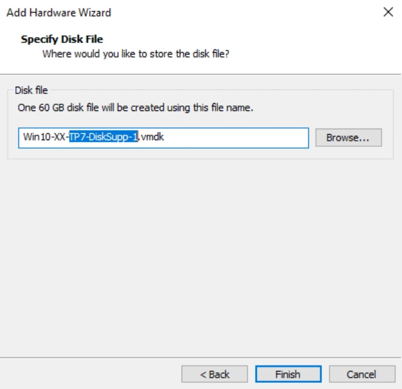
Entrez un nom parlant pour le fichier > Finish
Le nouveau disque apparaît dans la liste du matériel de votre VM.
Répétez ces étapes pour rajouter un second disque dur dans la VM
Avec la console graphique de votre VM Windows 10
Ouvrir la console de gestion des disques (disponible dans MaConsole sur le bureau ou via diskmgmt.msc).
Les deux nouveaux disques sont présents mais pas encore initialisés. Faire un clic droit sur Disque 1 > Initialiser le disque
Initialiser les deux disques avec une GUID Partition Table.
Les prochaines étapes doivent être réalisées trois fois
Faire un clic droit sur l'espace non alloué du disque 1 > Nouveau volume simple
L'assistant se lance > Suivant
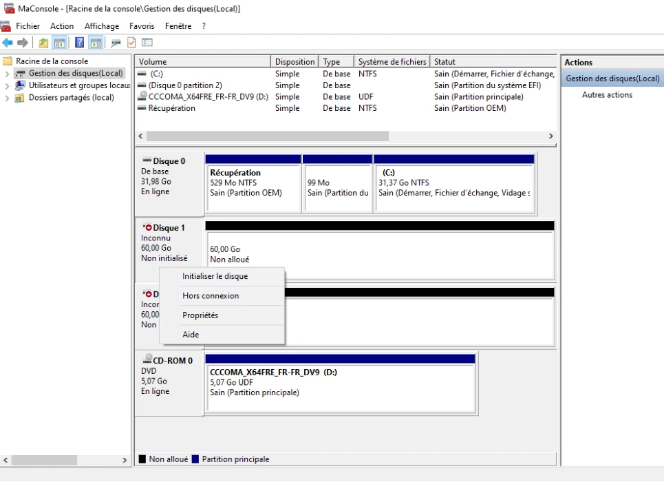
Taille totale du volume simple en Mo : 15360 (ce qui correspond à 15 Go).
Ne pas attribuer de lettre de lecteur ni de chemin d'accès de lecteur.
Ne pas formater ce volume.
Terminer
À l'issue de la création de vos trois partitions principales sur le disque 1, vous devez obtenir un écran similaire à celui présenté ci-dessous :
Refaire les étapes 1 à 6 deux fois de suite
Faire un clic droit sur l'espace non alloué du disque 1.
Nouveau volume simple
L'assistant démarre > Suivant
Taille totale du volume simple en Mo : 7168 (ce qui correspond à 7 Go).
Ne pas attribuer de lettre de lecteur ni de chemin d'accès de lecteur.
Ne pas formater ce volume.
Nous nous trouvons sur un disque initialisé avec une table de partitionnement GPT. Nous possédons donc 4 partitions principales. Si vous avez initialisé votre disque avec une table de partitionnement au format MBR, pas de problème. Vous devez cependant obtenir 3 partitions principales ainsi qu'une partition étendue contenant un lecteur logique.
Faire un clic droit sur la première partition principale du disque 1 > Formater
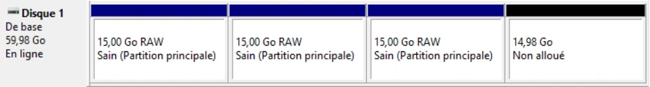
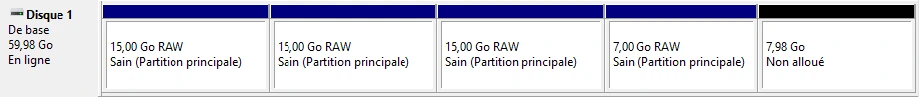
Faire un clic droit sur la seconde partition principale du disque 1 > Formater
Faire un clic droit sur le Volume D: Lecteur DVD pour d'abord libérer la lettre D et ensuite l'attribuer au nouveau volume.
Faire un clic droit sur le Volume D: > Modifier la lettre de lecteur et les chemins d'accès…
Supprimer > Oui
Vous pouvez ensuite attribuer la lettre de lecteur que vous souhaitez (exemple Z)
Faire un clic droit sur le volume DATA > Modifier la lettre de lecteur et les chemins d'accès…
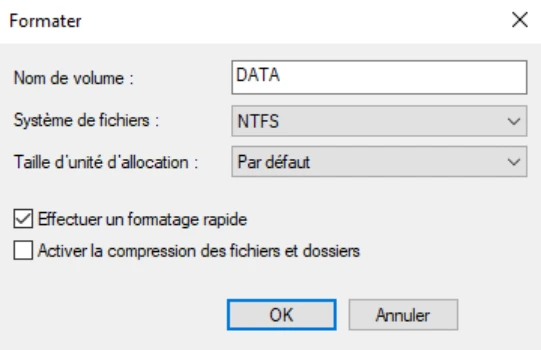
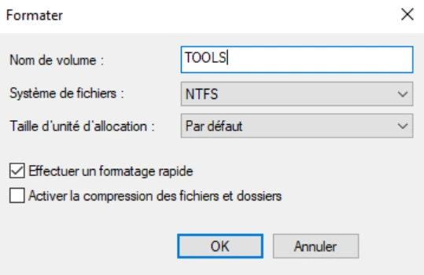
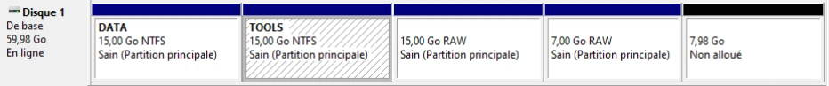
Ajouter la lettre D.
Faire un clic droit sur le volume TOOLS > Modifier la lettre de lecteur et les chemins d'accès…
Ajouter la lettre E.
Après ces étapes, les volumes sont visibles dans l'explorateur Windows, donc utilisables ! Une notification en bas à droite du bureau nous l'indique d'ailleurs.
Faire un clic droit sur la partition de 7 Go > Formater…
Faire un clic droit sur ARCHIVE > Modifier la lettre de lecteur et les chemins d'accès…
Ajouter la lettre de votre choix.
Faire un clic droit sur le volume DATA > Etendre le volume
Suivant
Clic sur disque 2 > Ajouter >
Clic sur disque 1 > < Supprimer
Sélectionner l'espace en Mo : 15360
Suivant
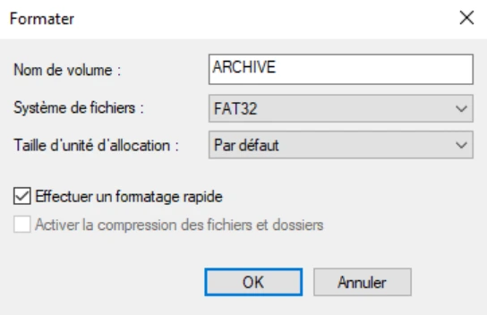
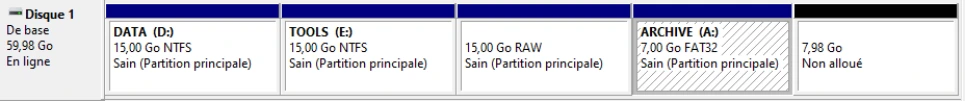
Terminer
Le système indique qu'il va automatiquement basculer les disques de base en disques dynamiques pour qu'ils puissent travailler "en équipe" > Oui
La légende et les codes couleur ont évolué. Les partitions principales se sont transformées en volume simple et le volume DATA en volume fractionné.
En ligne de commande sur votre VM Windows 10
Lancer une fenêtre de ligne de commande cmd.exe.
diskpart
list disk
select disk 1
list volume
select volume X (où X correspond au volume de 15 Go bruts RAW, le volume n) ; 1 dans le cas de cette solution)
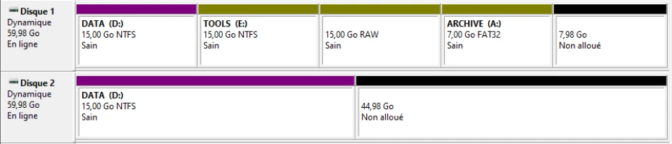
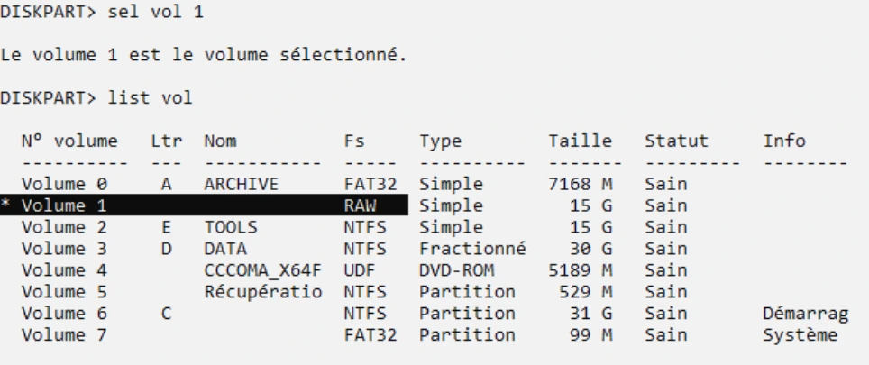
format FS=NTFS LABEL=COMMUN QUICK
assign letter=k
list vol
La liste permet de vérifier que le lecteur K: de 15 Go est bien formaté en NTFS.
La capture source montre les commandes suivantes sur le volume COMMUN sélectionné :
list vol
extend
list vol
DiskPart indique que le volume a été correctement étendu. COMMUN passe de 15 G à 22 G ; les autres lignes visibles restent ARCHIVE A: FAT32 7168 M, TOOLS E: NTFS 15 G et DATA D: NTFS fractionné 30 G.
La capture de correction affiche DATA D: NTFS, volume fractionné de 30 G, puis le sélectionne et le supprime.
list vol
select volume D
delete volume
list vol
Messages : Le volume 3 est le volume sélectionné ; DiskPart a correctement supprimé le volume.
Dans la liste après suppression, ARCHIVE, COMMUN et TOOLS restent présents ; DATA a disparu.
La capture relève le disque 0 système de 32 G, puis les disques 1 et 2 dynamiques de 60 G, dont les espaces libres sont respectivement 15 G et 59 G.
list disk
select disk 1
create volume simple
list volume
extend disk=2
format LABEL=DATA QUICK
assign letter=D
list volume
Messages successifs : disque 1 sélectionné ; volume créé ; volume étendu ; 100 pour cent effectués ; volume formaté ; lettre de lecteur ou point de montage assigné.
| Volume présenté à la fin | Lettre | Nom | Système de fichiers | Type | Taille | Statut |
|---|---|---|---|---|---|---|
| 0 | A | ARCHIVE | FAT32 | Simple | 7168 M | Sain |
| 1 | K | COMMUN | NTFS | Simple | 22 G | Sain |
| 2 | E | TOOLS | NTFS | Simple | 15 G | Sain |
| 3 | D | DATA | NTFS | Fractionné | 74 G | Sain |
La liste conserve aussi le lecteur DVD, la partition de récupération, le volume C: de démarrage et la partition système du disque installé.
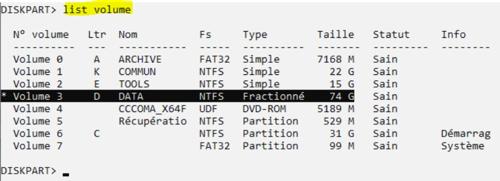
Investigation sur la VM Discovery à l'aide de PowerShell
Get-Disk | select number,size,PartitionStyle
Pour vérifier les informations générales :
Get-Volume
Pour n'afficher que les disques qui possèdent un FriendlyName
Get-Volume -FriendlyName Informatique,Achat-Ventes,Compta
Pour répondre à la consigne :
Get-Volume -FriendlyName Informatique,Achat-Ventes,Compta | Select DriveLetter, FileSystem,LabelSize
Set-Volume -DriveLetter C -NewFileSystemLabel "System"